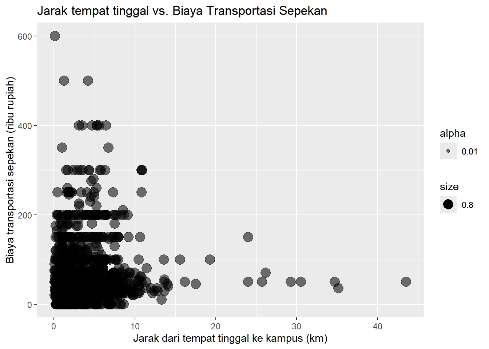

Modul 8 Analisis Hubungan Korelatif: Korelasi Variabel Metrik
Capaian Pembelajaran
Setelah mempelajari modul ini, Anda diharapkan mampu menghasilkan koefisien korelasi variabel di tingkat metrik dengan perangkat lunak komputer. STP-11.2
8.1 Pendahuluan
Analisis korelasi adalah salah satu teknik analisis yang termasuk ke dalam lingkup statistika bivariat, statistika yang analisisnya melibatkan dua variabel sekaligus. Pada praktikum sebelumnya kita sudah mengenal koefisien-koefisien berikut untuk menganalisis korelasi antara dua variabel nominal dan ordinal:
- V Cramer dan \(\lambda\) (lambda) untuk dua variabel nominal
- Gamma (\(\gamma\)) dan d-Somer untuk dua variabel ordinal
Dalam praktikum ini kita akan mempraktikkan analisis korelasi pada dua variabel metrik. Pada praktikum sebelumnya kita mengetahui bahwa dari koefisien-koefisien korelasi kita dapat mengetahui:
- kekuatan untuk dua variabel nominal
- kekuatan dan arah untuk dua variabel ordinal
Untuk dua variabel metrik, selain kekuatan dan juga arah hubungan, kita juga dapat menganalisis pola hubungan tersebut, yakni persebaran titik-titik data secara grafis.
Dalam praktikum ini kita akan mempraktikkan perhitungan dua jenis koefisien: Spearman’s rho (\(\rho\)) dan Pearson’s r.
8.2 Memuat Pustaka (Libraries) yang Diperlukan
Seperti biasa, kita perlu memuat pustaka (libraries) yang diperlukan dalam pengolahan data kita. Dalam analisis korelasi variabel metrik kita tidak lagi menggunakan tabel silang, tetapi kita langsung menganalisis kolom-kolom yang ada di dataset kita.
8.3 Memuat Dataset
Kita akan menggunakan dataset keempat kampus di Kota Bandar Lampung dan sekitarnya sebagai bahan. Tulis ulang dan jalankan baris perintah berikut untuk mengolah data keempat kampus
# Membaca data
data_mahasiswa <- read_csv2("datasets/Data Praktikum 07.csv")Aktivitas Mandiri 1
Buat dataset baru dari data_mahasiswa yang tadi dimuat sehingga berisi hanya mahasiswa UBL (filter(Kampus_PT == 'UBL')). Simpan ke dalam variabel data_ubl.
8.4 Pola Hubungan Data
Dalam analisis korelasi variabel-variabel metrik kita dapat menganalisis satu lagi sifat hubungan dalam dua variabel yang kita perhitungkan: pola hubungan data. Pola hubungan adalah bentuk sebaran titik-titik yang dapat kita lihat dengan diagram pencar (scatter plot).
Membuat diagram pencar dapat dilakukan dengan menerapkan perintah geom_point() dari pustaka ggplot2yang dimuat bersama pustaka tidyverse.
Kita akan melihat pola sebaran data kita dilihat dari variabel jarak dari kampus (jarak) dengan biaya yang dikeluarkan untuk transportasi selama sepekan (biaya sepekan). Variabel-variabel yang akan kita lihat hubungannya itu kita masukkan ke x dan y yang adalah dalam perintah aes(). Sementara itu, aes() di geom_point() digunakan untuk mengatur tampilan titik-titik data, seperti ukuran (size) dan transparansi titik (alpha).
# Membuat diagram pencar antara variabel jarak dan biaya transportasi sepekan
scatter_plot <- ggplot(
data = data_mahasiswa,
mapping = aes(
x = jarak, # variabel di sumbu X
y = `biaya sepekan`,
size = 0.8,
alpha = 0.01
)
) + # variabel di sumbu Y
geom_point(
aes()
) + # perintah untuk menampilkan diagram pencar
labs(
title = "Jarak tempat tinggal vs. Biaya Transportasi Sepekan",
y = "Biaya transportasi sepekan (ribu rupiah)",
x = "Jarak dari tempat tinggal ke kampus (km)"
)
# Menampilkan diagram
scatter_plot
Dari diagram yang dihasilkan kita dapat menarik interpretasi hubungan antara kedua variabel secara visual:
- Tidak ada kecenderungan arah hubungan antara jarak tempat tinggal ke kampus dengan biaya transportasi per pekan karena tidak terlihat adanya pola pada persebaran titik-titik data yang membentuk garis lurus seperti yang ditunjukkan oleh gambar ini.
- Terdapat responden yang tinggal dekat dengan kampus (<10 km) tetapi biayanya tetap tinggi (>Rp200 ribu), juga yang tinggal jauh dari kampus (20-40 km) tetapi biayanya rendah (<Rp200 ribu). Ini bisa dilihat pada titik-titik data yang berada di pojok kiri atas dan kanan bawah diagram.
Dari hasil diagram ini kita sudah bisa menduga bahwa hubungan antara jarak tempat tinggal ke kampus dengan biaya yang dikeluarkan tidak terlalu erat dan arahnya tidak beraturan.
Akan tetapi, untuk lebih jelas, kita perlu meninjaunya lewat angka koefisien korelasi.
Aktivitas Mandiri 2
Buatlah diagram pencar untuk variabel biaya sepekan dengan jarak untuk mahasiswa UBL saja dengan menyimpannya pada variabel scatter_plot_lat. Tuliskan interpretasi Anda terhadap hubungan kedua variabel tersebut.
8.5 Analisis Korelasi Spearman’s \(\rho\)
Setidaknya ada dua kondisi yang menganjurkan kita menganalisis korelasi suatu pasangan variabel metrik dengan koefisien \(\rho\) Spearman:
- Koefisien \(\rho\) Spearman biasanya digunakan untuk menganalisis korelasi dua variabel peringkat (rank). Dengan kata lain, koefisien ini lebih cocok dikenakan pada variabel-variabel dengan tingkat pengukuran interval, seperti peringkat, rating atau data lain yang tidak memiliki titik nol absolut yang bermakna.
- Kita tidak menemukan adanya hubungan linear antara dua variabel metrik yang kita analisis. Jika menurut pola data kita ditemukan hubungan linear, kita dianjurkan menggunakan koefisien \(\rho\) Spearman ini.
Kita akan menggunakan koefisien korelasi \(\rho\) Spearman ini untuk menganalisis hubungan antara jarak tempat tinggal (jarak) dengan biaya yang dikeluarkan per pekan (biaya sepekan).
Koefisien korelasi untuk variabel metrik di R dapat dianalisis dengan perintah cor() yang mengambil masukan berupa vektor data angka variabel-variabel yang kita analisis. Adapun jenis korelasi dapat kita pilih dengan menambahkan argumen method = yang dapat bernilai "spearman", "kendall", atau "pearson", sesuai dengan metode yang kita gunakan.
# Mengatur variabel x dan y
x <- data_mahasiswa$jarak
y <- data_mahasiswa$`biaya sepekan`
cor(x, y, method = "spearman")## [1] 0.08576446Sebagaimana koefisien-koefisien korelasi lainnya, nilai \(\rho\) Spearman berkisar antara \(-1\) hingga \(+1\) yang menyatakan hubungan berlawanan yang kuat hingga hubungan searah yang kuat. Secara umum, tanda positif pada koefisien tersebut menunjukkan hubungan yang searah antara biaya transportasi sepekan dengan jarak tempuh ke kampus. Akan tetapi, dilihat dari besar nilainya, sulit mengatakan bahwa terdapat hubungan yang kuat antara jarak tempuh ke kampus dengan biaya perjalanan sepekan.
Aktivitas Mandiri 3
Analisislah korelasi antara variabel biaya sepekan dengan jarak untuk mahasiswa UBL saja. Bagaimana kekuatan dan arah korelasi kedua variabel tersebut?
8.6 Analisis Korelasi Pearson’s r
Untuk analisis menggunakan koefisien korelasi Pearson’s r, kita akan memodifikasi sedikit data kita. Kita akan melihat hubungan antara jumlah perjalanan di hari kerja (weekdays) dengan jarak tempat tinggal ke kampus untuk pengguna transportasi online saja. Dengan demikian, kita perlu membuat dataset terpisah dari dataset utama kita.
Terlebih dahulu, kita perlu membuat variabel khusus jumlah_perjalanan_weekdays yang merupakan penjumlahan dari kolom-kolom Jumlah Perjalanan Senin hingga Jumlah Perjalanan Jumat. Perhatikan cara pembuatannya yang menggunakan perintah rowSums() dan across() yang merupakan perintah khusus untuk operasi-operasi antarkolom. Tanda : bermakna “pilih kolom dari jumlah perjalanan hari senin sampai kolom jumlah perjalanan hari jumat”. Hal ini memungkinkan karena dalam dataset kita kolom-kolom tersebut posisinya berdekatan.
# Membuat kolom jumlah perjalanan weekdays
data_mahasiswa <- data_mahasiswa |>
mutate(`jumlah_perjalanan_weekdays` = rowSums(
across(`Jumlah Perjalanan Senin`:`Jumlah Perjalanan Jumat`)
)
)Setelah itu, barulah kita membuat dataset khusus pengguna layanan online saja. Kita menggunakan perintah filter() dengan operator == yang bermakna saringlah data dengan nilai `kendaraan utama` sama dengan "Layanan online".
# Memilih responden mahasiswa pengguna angkutan daring saja
# dan membuatnya menjadi dataset baru
data_mahasiswa_online <- data_mahasiswa |>
filter(`kendaraan utama` == "Layanan online")Kita dapat mengecek hasilnya dengan melakukan perintah group_by() dan summarize(). Hasilnya akan menampilkan kendaraan utama kita hanya bernilai "Layanan online"
# Menampilkan hasil filter
data_mahasiswa_online |>
group_by(`kendaraan utama`) |>
summarize("jumlah" = n())
## # A tibble: 1 × 2
## `kendaraan utama` jumlah
## <chr> <int>
## 1 Layanan online 188Kemudian, kita akan menghitung koefisien korelasi Pearson’s \(r\)-nya.
# Mengatur variabel x dan y
x <- data_mahasiswa_online$jarak
y <- data_mahasiswa_online$`jumlah_perjalanan_weekdays`
cor(x, y, method = "pearson")
## [1] -0.2980376Interpretasi hasil koefisien tersebut sama dengan interpretasi koefisien korelasi variabel ordinal, yakni tanda menunjukkan arah hubungan sementara besar angka menunjukkan kekuatan hubungan.